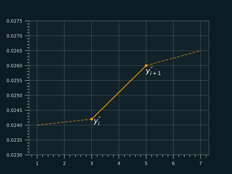

Yield Curve Construction#
Introduction#
In the world of fixed income the construction of the discount curve (also called zero curve) is a fundamental step in the modelling exercise. The job of an interest rate model is to describe the movements of the discount curve through time, starting from a known initial state/condition. In the Piterbarg book (see references), three main classes of curves are examined - simply bootstrapped \(C^0\) curves, local splines \(C^1\), and full smoothing splines \(C^2\). The family of splines we will examine in this post belong to \(C^2\) splines.
Just to get agree on some notation before we dive into curve construction techniques. We say that a price of a zero-coupon bond with maturity \(T\) is given by:
where \(y(T)\) is the discount (or zero) rate. We are interested in finding the curve that gives us the value of \(y(t)\) for every \(t\) in our domain (this can be 30, 40, 50 years, or even more in some cases). It will also be useful to build a curve of instantaneous forward rates from our yield curve. To do that we start from the following equality:
It is obvious that for these 2 things to be equal, the exponents need to be equal
We can now take a derivative w.r.t maturity \(T\) and get:
Which tells us how the spot and forward rates are related. We can immediately see, that if we want to work with instantaneous forward curves, it will be important for our yield curve \(y(t)\) to be differentiable
Local cubic splines \(C^1\)#
With a general \(C^0\) bootstrapped yield curve, we end up with a piecewise linear yield curve, which results in a saw-like forward curve as the yield curve is fully differentiable. To improve on this we can build a cubic spline that will produce a smooth yield curve, but would generally not give us a smooth forward curve. Smooth forward curve is important for pricing certain interest rate derivatives to produce realistic and stable prices. To improve on that, we want to impose certain restrictions on the shape of our curves that will not only fit our data, but also produce smooth forward curve.
Moving towards \(C^2\) splines#
We are staying in the same sphere of cubic splines, but we now want to impose the twice differentiability to the curve. Since we are still working with cubic splines, it is necessary for the second derivative to be piecewise linear.

That means that the second derivative can be expressed as:
for all \(x\in[x_i, x_{i+1}]\). We can now integrate the expression above to find the expression for \(y'(x)\). For some easier manipulation, we will denote \(y_{i}''\) with \(d_i\).
To simplify further the notation, we will denote \((x_{i+1}-x_i)\) with \(h_i\), so then we have:
To get the expression for \(y(x)\) we integrate again the expression:
Calculating \(C_1\) and \(C_2\)#
Since our starting point were actually the points on the curve (\(y_i\)) we want our interpolation to exactly pass through those points, or more specifically;
That means that the following two equations need to hold:
Solving the system, this gives us the expressions for \(C_1\) and \(C_2\):
Now we can plug that in the equation for \(y(x)\) to get the final expression:
Which gives us the expression:
Additional requirements and solving the system#
Since we only know the values of \(y_i\) and not what \(y_i''\) should be, we need to calculate those values in order to know how the final curve looks like. There is another requirement we need to impose on our curve in order for it to be complete, which will also help us in determining the values of \(d_i=y_i''\).
We already know that our second derivative is continuous (our starting assumption), and we have calculated \(C_1\) and \(C_2\) such that the curve will pass through the data points \(y_i\). We need to ensure that also our first derivative (\(y'(x)\)) is continuous, and we can do so by ensuring that the value of \(y'(x_i)\) defined on the interval \([x_{i-1}, x_i]\) is the same as the value of \(y'(x_i)\) defined on the interval \([x_i, x_{i+1}]\).
Let us do that. The expression for \(y'(x)\) on an interval \([x_{i-1}, x_i]\) is given by:
and by setting \(x=x_i\), we get
Similarly, we can get the expression for \(y'(x)\) on the interval \([x_i,x_{i+1}]\):
and by setting \(x=x_i\), we get
Now, as stated earlier, these two expressions for \(y'(x_i)\) need to be equal, that is:
For all \(i\in\{2,3,...,N-1\}\), and we define \(d_1=y_1''=0\) and \(d_N=y_N''=0\). This gives us a tri-diagonal system to solve. More specifically in matrix format the problem can be written as:
With the expression above, we now have a system of equations that we need to solve. This system is expressable as:
To solve it we would need to invert the matrix \(\mathbf{M}\), but this can be costly. What we could do instead is to perform an LU decomposition and solve the system that way.
Note
Reminder: LU decomposition is a way of representing a matrix as a product of a lower triangular matrix (L) and an upper triangluar matrix (U). Usually, the elements on the diagonal of the lower triangular matrix are set to \(1\): \(\mathbf{M}=L\cdot U = \begin{bmatrix} 1 & 0 & 0 & \cdots & 0 \\ l_{2,1} & 1 & 0 & \cdots & 0 \\ l_{3,1} & l_{3,2} & 1 & \cdots & 0 \\ \vdots & & & \ddots & \\ l_{n,1} & l_{n,2} & l_{n,3} & \cdots & 1 \\ \end{bmatrix} \begin{bmatrix} u_{1,1} & u_{1,2} & u_{1,3} & \cdots & u_{1,n} \\ 0 & u_{2,2} & u_{2,3} & \cdots & u_{2,n} \\ 0 & 0 & u_{3,3} & \cdots & u_{3,n} \\ \vdots & & & \ddots & \\ 0 & 0 & 0 & \cdots & u_{n,n} \\ \end{bmatrix}\)
On the below plot we can see the result of building the ESTR curve based on the real market data. The curve in red is the fitted yield curve, while in green we can see the smooth forward curve, exactly as we required in the setup of our problem:
Summing it up#
We have briefly explained how the \(C^0\) and \(C^1\) splines work and what their drawbacks are, then we have shown what improvements twice differentiable splines bring to the table and we have derived the solution for the problem. It is left as an exercise for the reader to implement this in their favorite programming language and put the theory to practice
I hope you enjoyed reading this post and that you found it useful!